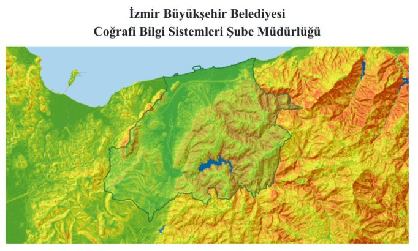
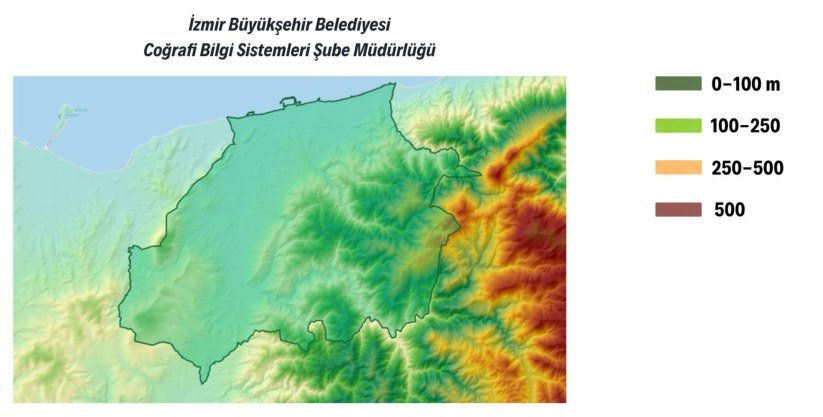
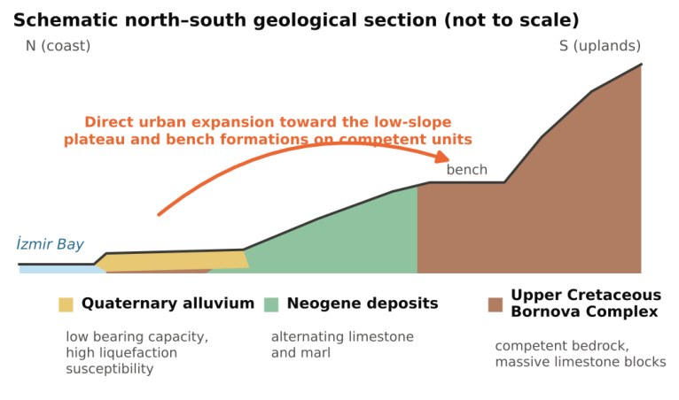
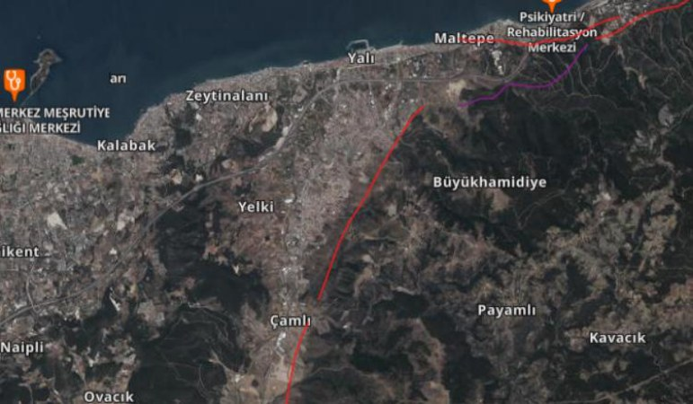
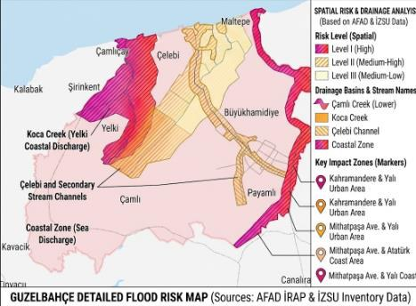
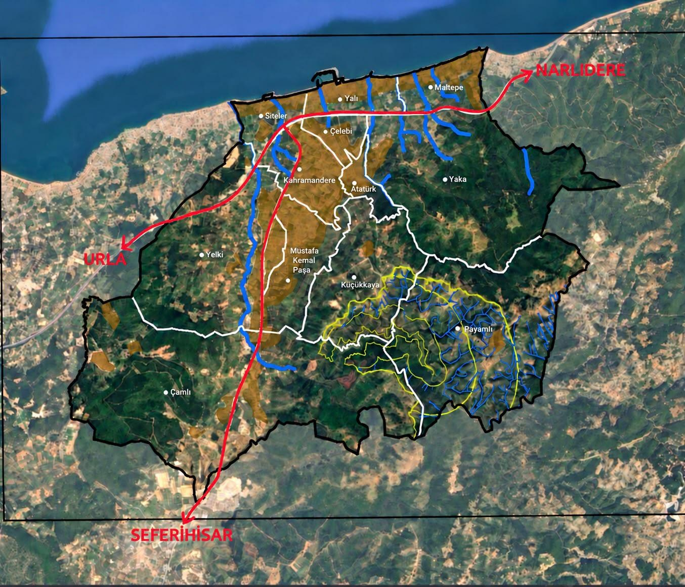

Doğal Yapı ve Afet Riskleri
Topoğrafya, jeoloji, fay hatları ve depremsellik, dereler ve taşkın riski, iklim: planlama kararlarını sınırlayan fiziki eşikler
Eğim ve Yükselti
Arazi kuzeydeki kıyı ovasından güney ve doğudaki dağlık kütlelere doğru dikleşiyor · İBB Coğrafi Bilgi Sistemleri

- %0–10 hafif eğimli
- %10–20 orta eğimli
- %20 üzeri dik
Kaynak: İBB CBS Şube Müdürlüğü, araştırma grubu derlemesi.
Eğim Sınıfları ve Planlama
- %0–10Kentsel gelişmeye en uygunDüz kıyı ve vadi ovaları; altyapı kurulumu kolay.
- %10–20Düşük yoğunlukHafriyat ve istinat çözümü gerektiren geçiş yamaçları; düşük yoğunluklu konut ve rekreasyona uygun.
- %20 üzeriYapılaşma dışıDik sırtlar; erozyon ve heyelan tehlikesi nedeniyle yapılaşmaya kapalı tutulmalı.
Eğim özellikle batıda Yaka, Küçükkaya ve Payamlı'da artıyor. Yaka'nın kuzeyinde eğim çoğunlukla %0–20 iken güneyinde ve mahallenin büyük bölümünde %30'u aşıyor.

Kaynak: İBB CBS Şube Müdürlüğü, araştırma grubu derlemesi.
Yükselti Kuşakları ve Kullanım
Kuşak yükseklikleri ölçekli çizildi; en üstteki kuşak açık uçlu.
Jeolojik Yapı
Üç ana birim: kıyıda alüvyon, eteklerde Neojen göl çökelleri, güneyde Bornova Karmaşığı · MTA Yerbilimleri Harita Görüntüleyici
| Birim | Yaş | Litoloji | Konum | Zemin davranışı | Planlamaya uygunluk |
|---|---|---|---|---|---|
| Alüvyon | Kuvaterner | Tutturulmamış kıyı ve vadi tabanı çökelleri | Kıyı şeridi | Düşük taşıma gücü, yüksek sıvılaşma eğilimi | Kısıtlı Zemin iyileştirme ve jeoteknik etüt gerekli |
| Göl çökelleri | Neojen | Kireçtaşı ve marn ardalanması | Yelki ve iç kesimdeki etekler | Değişken; marn katmanları ayrışıp yumuşuyor | Koşullu Parsel ölçeğinde jeoteknik etüt |
| Bornova Karmaşığı (İzmir filişi) | Üst Kretase | Masif kireçtaşı blokları içeren fliş | Güneydeki yüksek kesimler | Sağlam anakaya | Tercih edilen Büyüme düşük eğimli plato ve basamaklara yönlendirilmeli |

Ölçeksiz şema, araştırma grubu. Kentsel gelişme kıyı alüvyonundan, sağlam birimler üzerindeki düşük eğimli plato ve basamaklara yönlendirilmeli.
Maden Kaynakları
1/1.000.000 ölçekli Türkiye Metalojenik Haritası'na göre ilçe sınırları içinde ekonomik ölçekte metalik maden zuhuru ya da yatağı bulunmuyor. Komşu Menderes ve Seferihisar'da altın, kurşun-çinko ve gümüş zuhurları var.
Efemçukuru Altın Madeni Menderes ilçesinde; Çamlı Barajı havzasıyla ilişkisi Havza ve Koruma sayfasında.
Fay Hatları ve Depremsellik
Üç aktif yapının etkisi altında · MTA aktif fay haritası, TBDY-2018 (475 yıllık tekerrür, DD-2)
| Fay zonu | Tür / doğrultu | Güzelbahçe'ye göre konumu | Önem |
|---|---|---|---|
| Seferihisar Fay Zonu | Aktif, K–G doğrultulu | Holosen kolu ilçenin kırsal ve kentsel dokusunu kesip kıyıya uzanıyor | En yüksek Birincil yüzey kırığı ve sarsıntı tehlikesi |
| İzmir Fay Zonu | Aktif | İlçeyi doğudan sınırlıyor | Güçlü sarsıntı kaynağı |
| Gülbahçe Fay Zonu | Doğrultu atımlı | İlçenin batısında | Güçlü sarsıntı kaynağı |

- Holosen fay (son 11.000 yılda yüzey kırığı)
- Kuvaterner fay (son 2,6 milyon yıl)
Kaynak: MTA Yerbilimleri Harita Görüntüleyici, araştırma grubu derlemesi. Fay zonunun yoğun yapılaşmayla kesiştiği yerlerde heyelan ve sıvılaşma gibi ikincil riskler de artıyor.
Tasarım Yer İvmesi: Zemine Göre (PGA, g)
475 yıllık tekerrür (TBDY-2018, DD-2). Suya doygun kıyı alüvyonu dalgaları büyütüyor; bu da sıvılaşma eğilimini ve yapı kırılganlığını artırıyor.
Fay türleri
| Aktif (Holosen) fay | Son 11.000 yılda yüzey kırığı oluşturmuş |
| Kuvaterner fay | Son 2,6 milyon yılda aktif |
| Olası aktif fay | Aktif olduğundan şüphelenilen fay ya da çizgisellik |
İzmir ve Çevresinde Hasar Yapan Tarihsel Depremler
Şiddet ve Büyüklük, 1778–1883
Daire büyüdükçe depremin büyüklüğü artıyor; büyüklüğü verilmeyen depremler içi boş daireyle gösterildi. Ayrıntılar aşağıdaki tabloda.
| Tarih | Etkilenen yer | Şiddet | Büyüklük | Kaynakta aktarılan etki |
|---|---|---|---|---|
| 3–5 Temmuz 1778 | İzmir, Urla | IX | 6,4 | 15 saniye sürdü, İzmir'i neredeyse tamamen yıktı; Urla'da yer yarıldı. Can kaybı 200'ü aştı. |
| 13 Ekim 1850 | İzmir, Manisa, Kemalpaşa | VIII | – | Batı Anadolu'da çok şiddetli hissedildi; Kemalpaşa'da yarıklar açıldı. |
| 3 Kasım 1862 | Turgutlu | X | 6,9 | Turgutlu'daki bütün evler yıkıldı, 280 kişi öldü; İzmir'de de hissedildi. |
| 1 Şubat 1873 | Sisam Adası, İzmir, Aydın | IX | – | – |
| 29 Temmuz 1880 | Menemen, Bornova, Karşıyaka | IX | 6,7 | İzmir ve Gediz çöküntülerinde geniş hasar; İzmir–Turgutlu demiryolu yarıklarla kesildi. |
| 15 Ekim 1883 | Çeşme Yarımadası | IX | 6,8 | Yarımadanın batısındaki bütün köylerde geniş hasar; İzmir'de hafif hasar. Kaynak 15.000 kişinin öldüğünü aktarıyor. |
| 1 Kasım 1883 | İzmir Körfezi, Çeşme Yarımadası | VIII | – | Şiddetli deprem; zeminde yarıklar açıldı. |
Kaynak: İBB İzmir Deprem Senaryosu ve Deprem Master Planı (İDSDMP). Şiddet Roma rakamlarıyla; büyüklüğü verilmeyen depremler "–" ile gösterildi.
Afet Riskleri ve Planlama İlkeleri
Yüksek depremsellik, kıyı hidrojeolojisi ve engebeli topoğrafyanın birleşimi · AFAD İzmir İl Afet Risk Azaltma Planı (İRAP)
Dereler ve Taşkın Riski
Dereler güneydeki Çatalkaya ve Çamlı dağlarından doğup dik yamaçlardan kuzeye, İzmir Körfezi'ne akıyor; çoğu kuru dere
Çamlı Deresi Boyunca: Dağdan Körfeze
Yavaşlayan su sedimenti bırakınca yatak kapasitesi düşüyor; şiddetli yağışta taşkın kent merkezini ve konut alanlarını doğrudan etkiliyor.
| Dere / havza | Risk düzeyi | Ana risk etkeni | Etkilenen alan |
|---|---|---|---|
| Çamlı Deresi (aşağı havza) | I. derece (yüksek) | Geniş havza alanı, kıyıya yakın yatak daralması ve sediment birikimi | Kahramandere ve Yalı'nın kentsel alanları |
| Kıyı kuşağı (denize boşalım) | I. derece (yüksek) | Fırtına kabarması ile dere taşkınının birleşmesi | Mithatpaşa Caddesi ve Yalı kıyısı |
| Koca Dere (Yelki kıyı boşalımı) | II. derece (orta–yüksek) | Mevsimsel akış dalgalanması ve tıkanan menfezler | Yelki ve Maltepe'nin tarım ve konut alanları |
| Çelebi ve ikincil dere kanalları | II. derece (orta–yüksek) | Üstü kapatılmış dere yatakları ve kentsel müdahaleler | Çelebi ve Atatürk'teki yollar |

Araştırma grubu; AFAD İRAP ve İZSU envanter verisine dayanır.

Araştırma grubu; İBB su kaynakları (hidroloji) haritası ve İzmir 2B Kent Rehberi.
Dere Sistemi
| Ana dereler | Çamlıçay, Yağçayı, Alibey, Fidan |
| İkincil kollar | Kuduz (Acem), Kostallı (Karaman), Yarende (Yarendede), İncirli |
| Doğal sınırlar | Doğuda Yağçayı (Narlıdere yönü), batıda Çamlıçay (Çamlı ve Urla/Bademler yönü) |
Taşkın açısından işaretlenmesi gereken dereler
Taşkını Artıran Etkenler
- YatakKentleşme sırasında Çamlı, Koca ve Çelebi derelerinin yataklarının daralması.
- KapatmaBazı ikincil derelerin üstünün kapatılması ya da yol menfezlerinden geçirilmesi.
- ÖnlemİZSU dere ıslahı: kanal genişletme ve betonarme istinat duvarları.
İklim ve Rüzgâr
Akdeniz iklimi: ılık ve yağışlı kışlar, sıcak ve kurak yazlar · MGM İzmir istasyonu uzun yıllar ortalaması (1938–2025)
Aylık Ortalama Sıcaklık ve Yağış
Gölgeli aylar kurak dönemdir: yağışın ortalama sıcaklığın iki katından az olduğu Mayıs–Eylül hesap. Değerler İzmir istasyonuna aittir; Güzelbahçe'de ayrı bir MGM istasyonu yok.
Ölçülen En Düşük ve En Yüksek Sıcaklık (°C)
1938–2025 arasında ölçülen en yüksek değer 43,2 °C (Temmuz), en düşük değer −8,2 °C (Ocak).
Mevsimlere Göre Yağış (mm)
Aylık ortalamalardan toplandı hesap. Kış: Aralık–Şubat.
Güneşlenme Süresi ve Yağışlı Gün Sayısı
Yılda ortalama 77,4 yağışlı gün; günlük güneşlenme ortalaması 8,1 saat.
Rüzgâr: 8 Knot ve Üzeri Esintinin Zaman Payı (%)
Güzelbahçe noktası, 2012–2025 (Windy.app). Hâkim rüzgâr kuzeyden (N) esiyor; Temmuz–Ağustos'ta kuzey rüzgârlarının görülme olasılığı %60'a, hızı 12–17 knot'a çıkıyor ve kıyıdan iç kesimlere doğal havalandırma sağlıyor.
Veri Kaynağı: Araştırma grubunun fiziki yapı, doğal ve çevresel kaynaklar raporu · MTA Yerbilimleri Harita Görüntüleyici · AFAD İzmir İl Afet Risk Azaltma Planı (İRAP) · İBB Coğrafi Bilgi Sistemleri · İBB İzmir Deprem Senaryosu ve Deprem Master Planı · MGM İl ve İlçe İstatistikleri: İzmir (1938–2025) · Windy.app Güzelbahçe rüzgâr istatistikleri (2012–2025) · İZSU · Çevre, Şehircilik ve İklim Değişikliği Bakanlığı İzmir 2024 Çevre Durum Raporu